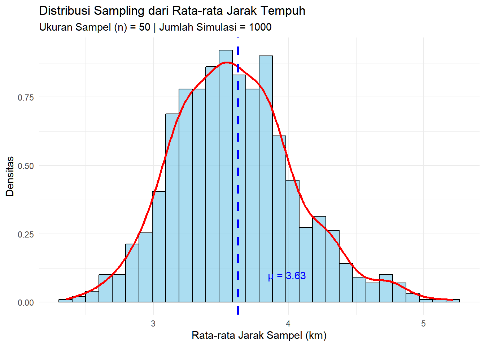

Modul 4 Distribusi Sampling dan Interval Kepercayaan
Setelah mempelajari modul ini, Anda diharapkan dapat:
- menghasilkan distribusi statistik sampel dan menghitung standard error-nya STP-4.3
- menghasilkan interval kepercayaan dengan menggunaan perangkat lunak komputer STP-5.2
4.1 Pendahuluan
Dalam statistika inferensial, kita seringkali ingin mengetahui karakteristik dari sebuah populasi (misalnya, rata-rata uang saku seluruh mahasiswa di Indonesia). Namun, mengumpulkan data dari seluruh populasi seringkali tidak memungkinkan. Sebagai solusinya, kita mengambil sampel acak dari populasi tersebut dan menggunakan statistik dari sampel (seperti rata-rata sampel) untuk menduga parameter populasi.
Modul ini akan membahas dua konsep fundamental dalam statistika inferensial: Distribusi Sampling dan Interval Kepercayaan untuk rata-rata dan proporsi. Kita akan menggunakan studi kasus data jarak tempuh mahasiswa dari empat universitas di Bandar Lampung dan sekitarnya untuk memahami bagaimana konsep ini diterapkan dalam praktik.
4.2 Perangkat Lunak dan Pustaka (Libraries)
Pastikan Anda telah menginstal pustaka tidyverse yang akan sangat membantu dalam proses manipulasi dan visualisasi data.
4.3 Memuat dan Mempersiapkan Data
Langkah pertama adalah memuat data survei mahasiswa dari empat universitas. Kita akan menggabungkan dan membersihkan data tersebut untuk analisis. Variabel yang akan menjadi fokus kita adalah jarak tempuh (km) dan jenis tempat tinggal.
# Membaca 4 file CSV
df_uinril <- read_csv2("datasets/DataUtama_mhsUINRIL.csv")
df_ubl <- read_csv2("datasets/DataUtama_mhsUBL.csv")
df_unila <- read_csv2("datasets/DataUtama_mhsUNILA.csv")
df_itera <- read_csv2("datasets/DataUtama_mhsITERA.csv")
# Membersihkan dan menggabungkan data
# Perhatikan: UNILA memiliki nama kolom dengan huruf besar "Jenis Tempat Tinggal"
data_mahasiswa <- bind_rows(
df_uinril |>
select(
kampus = kampus,
jarak_km = jarak.km,
jenis_tinggal = jenis.tempat.tinggal
),
df_ubl |>
select(
kampus = kampus,
jarak_km = jarak.km,
jenis_tinggal = jenis.tempat.tinggal
),
df_unila |>
select(
kampus = kampus,
jarak_km = jarak.km,
jenis_tinggal = `Jenis Tempat Tinggal` # Perhatikan: huruf kapital
),
df_itera |>
select(
kampus = kampus,
jarak_km = jarak.km,
jenis_tinggal = jenis.tempat.tinggal
)
) |>
drop_na(jarak_km, jenis_tinggal) |> # menghilangkan missing values
mutate(
jarak_km = as.numeric(jarak_km),
tipe_tinggal_baku = case_when(
grepl("Kos", jenis_tinggal, ignore.case = TRUE) ~ "Kos/Asrama",
grepl("Asrama", jenis_tinggal, ignore.case = TRUE) ~ "Kos/Asrama",
TRUE ~ "Rumah Keluarga/Pribadi"
)
) |>
filter(jarak_km > 0 & jarak_km < 100) # membatasi jarak yang realistis
# Menampilkan beberapa baris pertama dari data gabungan
head(data_mahasiswa)## # A tibble: 6 × 4
## kampus jarak_km jenis_tinggal tipe_tinggal_baku
## <chr> <dbl> <chr> <chr>
## 1 UINRIL 19.3 Rumah bersama saudara Rumah Keluarga/Pribadi
## 2 UINRIL 0.58 Kos sendiri Kos/Asrama
## 3 UINRIL 0.56 Kos sendiri Kos/Asrama
## 4 UINRIL 1.05 Kos sendiri Kos/Asrama
## 5 UINRIL 1.69 Rumah mengontrak bersama-sama Rumah Keluarga/Pribadi
## 6 UINRIL 7.91 Rumah pribadi/rumah keluarga Rumah Keluarga/Pribadi
# Menampilkan ringkasan data
summary(data_mahasiswa)## kampus jarak_km jenis_tinggal
## Length:1600 Min. : 0.06352 Length:1600
## Class :character 1st Qu.: 1.31127 Class :character
## Mode :character Median : 2.90884 Mode :character
## Mean : 3.62552
## 3rd Qu.: 5.14000
## Max. :43.54519
## tipe_tinggal_baku
## Length:1600
## Class :character
## Mode :character
##
##
##
# Menampilkan frekuensi jenis tempat tinggal yang sudah dibakukan
table(data_mahasiswa$tipe_tinggal_baku)##
## Kos/Asrama Rumah Keluarga/Pribadi
## 639 961Penjelasan
case_when():Fungsi
case_when()(bagian daridplyr) sangat berguna untuk membuat variabel baru berdasarkan serangkaian aturan kondisional, mirip seperti pernyataanIF-ELSE IF-ELSE. Di dalammutate(), kita membuat kolom baru bernamatipe_tinggal_baku.
Aturan pertama:
str_detect(tolower(jenis_tinggal), "kos|asrama|rusunawa") ~ "Kos/Asrama"
tolower(jenis_tinggal): Mengubah semua teks di kolomjenis_tinggalmenjadi huruf kecil agar pencarian tidak sensitif terhadap huruf besar/kecil.
str_detect(...): Fungsi ini memeriksa apakah sebuah teks mengandung pola tertentu.
"kos|asrama|rusunawa": Ini adalah polanya. Tanda|berarti “ATAU”. Jadi, fungsi ini mencari kata “kos” ATAU “asrama” ATAU “rusunawa”.
~ "Kos/Asrama": Jika salah satu kata kunci ditemukan, maka nilai untuk kolomtipe_tinggal_bakuadalah “Kos/Asrama”.Aturan kedua:
TRUE ~ "Rumah Keluarga/Pribadi"
TRUE: Ini adalah kondisi “penampung” atau default. Jika tidak ada kondisi sebelumnya yang terpenuhi, aturan ini akan dijalankan.
~ "Rumah Keluarga/Pribadi": Memberi nilai “Rumah Keluarga/Pribadi” untuk semua baris yang tidak cocok dengan aturan pertama.Singkatnya, kode ini membakukan data
jenis_tinggalyang bervariasi menjadi dua kategori yang bersih dan konsisten untuk analisis proporsi.
Pada tahap ini, kita menganggap data gabungan dari 1.206 mahasiswa sebagai “populasi” kita untuk tujuan simulasi.
4.4 Distribusi Sampling dan Standard Error
Distribusi sampling adalah distribusi dari suatu statistik (misalnya, rata-rata) yang dihitung dari semua kemungkinan sampel dengan ukuran yang sama yang diambil dari sebuah populasi. Ini adalah istilah lain dari distribusi statistik sampel.
Teorema Limit Pusat (Central Limit Theorem) menyatakan bahwa jika kita mengambil sampel yang cukup besar, distribusi sampling dari rata-rata akan mendekati distribusi normal.
4.4.1 Mendefinisikan Parameter Populasi
Pertama, mari kita hitung rata-rata dan standar deviasi “populasi” kita sebagai acuan.
# Menghitung rata-rata jarak "populasi"
pop_mean <- mean(data_mahasiswa$jarak_km)
# Menghitung standar deviasi jarak "populasi"
pop_sd <- sd(data_mahasiswa$jarak_km)
paste("Rata-rata Jarak Populasi (μ):", round(pop_mean, 2), "km")## [1] "Rata-rata Jarak Populasi (μ): 3.63 km"## [1] "Standar Deviasi Populasi (σ): 3.35 km"4.4.2 Simulasi Pengambilan Sampel
Sekarang, kita akan mensimulasikan proses pengambilan sampel secara berulang. Kita akan mengambil 1000 sampel acak, masing-masing berukuran 50 mahasiswa (n=50), lalu menghitung rata-rata jarak untuk setiap sampel.
# Menetapkan parameter simulasi
ukuran_sampel <- 50
jumlah_simulasi <- 1000
# Menjalankan simulasi
set.seed(123) # Untuk hasil yang dapat direproduksi. Silakan ganti seed sesuai keinginan Anda.
# 'replicate' akan menjalankan ekspresi kedua sebanyak 'jumlah_simulasi' kali
rataan_sampel <- replicate(jumlah_simulasi, {
sampel_jarak <- sample(data_mahasiswa$jarak_km, ukuran_sampel)
mean(sampel_jarak)
})
# Membuat dataframe dari hasil simulasi
df_sampling <- data.frame(rataan_sampel)
head(df_sampling)## rataan_sampel
## 1 3.393546
## 2 4.115982
## 3 3.263581
## 4 4.171112
## 5 3.345113
## 6 3.373455Aktivitas Mandiri 1: Simulasi dengan Parameter Berbeda STP-4.3
Modifikasi kode simulasi di atas:
1. Ubah ukuran_sampel menjadi 30 (dari 50)
2. Ubah jumlah_simulasi menjadi 500 (dari 1000)
3. Hitung ulang SE empiris dan teoritis
4. Buat histogram distribusi sampling yang baru
5. Bandingkan:
- Bagaimana bentuk distribusi berubah dengan n=30 vs n=50?
- Apakah SE empiris dan teoritis masih dekat?
4.4.3 Visualisasi Distribusi Sampling
Kumpulan dari 1000 rata-rata sampel inilah yang membentuk distribusi sampling. Mari kita visualisasikan dalam bentuk histogram.
# Visualisasi Distribusi Sampling dengan Histogram
ggplot(df_sampling, aes(x = rataan_sampel)) +
geom_histogram(aes(y = ..density..), bins = 30, fill = "skyblue", color = "black", alpha = 0.7) +
geom_density(color = "red", size = 1) +
geom_vline(xintercept = pop_mean, color = "blue", linetype = "dashed", size = 1.2) +
labs(
title = "Distribusi Sampling dari Rata-rata Jarak Tempuh",
subtitle = paste("Ukuran Sampel (n) =", ukuran_sampel, "| Jumlah Simulasi =", jumlah_simulasi),
x = "Rata-rata Jarak Sampel (km)",
y = "Densitas"
) +
annotate("text", x = pop_mean * 1.1, y = 0.1, label = paste("μ =", round(pop_mean, 2)), color = "blue") +
theme_minimal()
Perhatikan bagaimana distribusi dari rata-rata sampel berbentuk seperti lonceng (mendekati normal) dan berpusat di sekitar rata-rata populasi (garis biru putus-putus).
4.4.4 Menghitung Standard Error (SE)
Standard Error (SE) adalah standar deviasi dari distribusi sampling. Ini mengukur seberapa besar variasi rata-rata sampel di sekitar rata-rata populasi. SE dapat dipahami dari dua perspektif: satu dari sisi teori dalam simulasi, dan satu lagi dari sisi praktik ketika kita hanya memiliki satu sampel.
Empiris (dari simulasi): Menghitung standar deviasi dari 1000 rata-rata sampel yang kita hasilkan.
Teoritis (dari populasi): Menggunakan rumus \(SE=\frac{\sigma}{\sqrt{n}}\), di mana \(σ\) adalah standar deviasi populasi dan \(n\) adalah ukuran sampel.
Estimasi (dari sampel): Dalam praktik statistika inferensial, kita hampir tidak pernah mengetahui . Oleh karena itu, kita mengestimasinya menggunakan standar deviasi dari sampel kita sendiri (s). Rumusnya menjadi \(SE=\frac{s}{\sqrt{n}}\). Inilah nilai yang sebenarnya digunakan saat kita membuat interval kepercayaan atau melakukan uji hipotesis dari data sampel nyata.
# 1. Standard Error Empiris (dari 1000 sampel)
se_empiris <- sd(df_sampling$rataan_sampel)
# 2. Standard Error Teoritis (menggunakan info populasi)
se_teoritis <- pop_sd / sqrt(ukuran_sampel)
paste("Standard Error (Empiris, dari simulasi):", round(se_empiris, 3))## [1] "Standard Error (Empiris, dari simulasi): 0.452"## [1] "Standard Error (Teoritis, dari populasi): 0.474"Mari kita hitung estimasi standard error dari satu sampel acak yang akan kita gunakan nanti di Bagian 4.5.
# Mengambil satu sampel acak (sama seperti di Bagian 4.1)
set.seed(42)
sampel_tunggal_untuk_se <- sample(data_mahasiswa$jarak_km, ukuran_sampel)
sd_sampel_tunggal <- sd(sampel_tunggal_untuk_se)
# 3. Estimasi Standard Error (dari satu sampel, kasus nyata)
se_estimasi <- sd_sampel_tunggal / sqrt(ukuran_sampel)
paste("Estimasi Standard Error (dari satu sampel):", round(se_estimasi, 3))## [1] "Estimasi Standard Error (dari satu sampel): 0.307"Perhatikan bahwa nilai SE Empiris dan Teoritis sangat dekat karena berasal dari simulasi di mana parameter populasi diketahui. Nilai SE Estimasi akan bervariasi tergantung sampel mana yang kita ambil, namun nilai inilah yang paling realistis untuk digunakan dalam analisis nyata.
4.5 Estimasi Parameter-1: Interval Kepercayaan Rata-rata
Untuk bagian ini kita akan menggunakan library bernama MKinferyang berguna untuk menghasilkan interval kepercayaan sebagai estimasi rentang.
Lakukan instalasi library ini dengan perintah berikut.
install.packages("MKinfer")Kemudian muat paket MKinfer tersebut.
4.5.1 Mengambil Satu Sampel
# Kita gunakan sampel yang sudah dibuat sebelumnya
sampel_tunggal <- sampel_tunggal_untuk_se
mean_sampel_tunggal <- mean(sampel_tunggal)
cat(paste("Rata-rata Sampel Tunggal:", round(mean_sampel_tunggal, 2), "km\n"))## Rata-rata Sampel Tunggal: 3.46 km## Standar Deviasi Sampel Tunggal: 2.17 km4.5.2 Menghasilkan Interval Kepercayaan
# Menghitung interval kepercayaan 95% menggunakan MKinfer
hasil_ci_mean <- meanCI(sampel_tunggal, conf.level = 0.95)
# Menampilkan hasil
hasil_ci_mean##
## Exact confidence interval(s)
##
## 95 percent confidence interval:
## 2.5 % 97.5 %
## mean 2.845641 4.081422
##
## sample estimates:
## mean sd
## 3.463532 2.174163
##
## additional information:
## SE of mean
## 0.307473Hasil dari fungsi meanCI tersebut langsung menunjukkan rentang kepercayaan yang limit bawahnya ditunjukkan oleh angka di bawah 2.5%dan limit atasnya oleh angka di bawah 97.5%. Nilai-nilai ini adalah nilai \(\alpha/2\) yang dibagi dua ke kiri dan kanan grafik.
Pertanyaan
Berapakah rentang kepercayaan untuk rata-rata jarak tempat tinggal dari kampus dari sampel kita? Tuliskan interpretasinya yang tepat. Bandingkan dengan rata-rata parameter
# Jawablah pertanyaan di atas dengan menuliskannya sebagai komentar di chunk ini
# Rentang kepercayaannya adalah 2,81 - 3,95 km
# Apa interpretasi dari hasil ini?
# Rata-rata jarak dari kampus untuk tempat tinggal seluruh mahasiswa berada di rentang 2,81 - 3,95 km. Jika dibandingkan dengan rata-rata populasi, rata-rata populasi ternyata masuk di rentang ini.
pop_mean## [1] 3.6255154.6 Estimasi Parameter-2: Interval Kepercayaan Proporsi
Selain rata-rata, kita juga sering tertarik untuk mengestimasi proporsi dari suatu kategori dalam populasi. Contohnya, berapa persentase mahasiswa yang tinggal di kos/asrama? Prosesnya mirip: kita mengambil sampel, menghitung proporsi sampel, lalu membangun interval kepercayaan di sekitar proporsi tersebut.
4.6.1 Parameter Proporsi
Pertama, mari kita hitung proporsi “populasi” yang sebenarnya dari data kita. Kita akan mencari proporsi mahasiswa yang tinggal di “Kos/Asrama”.
# Menghitung proporsi populasi
tabel_populasi <- table(data_mahasiswa$tipe_tinggal_baku)
pop_prop <- prop.table(tabel_populasi)["Kos/Asrama"]
cat("Tabel Frekuensi Jenis Tinggal di Populasi:\n")## Tabel Frekuensi Jenis Tinggal di Populasi:
print(tabel_populasi)##
## Kos/Asrama Rumah Keluarga/Pribadi
## 639 961##
## Proporsi Mahasiswa di Kos/Asrama (p): 0.39944.6.2 Mengambil Satu Sampel dan Menghitung Proporsinya
Sekarang, kita ambil satu sampel acak (misalnya, n=100) dan hitung proporsi sampel \(\hat{p}\) mahasiswa yang tinggal di kos/asrama.
# Menetapkan ukuran sampel
ukuran_sampel_prop <- 100
# Mengambil sampel acak dari kolom tipe tinggal
set.seed(101) # Menggunakan seed baru
sampel_prop <- sample(data_mahasiswa$tipe_tinggal_baku, ukuran_sampel_prop)
# Menghitung frekuensi di dalam sampel
tabel_sampel <- table(sampel_prop)
# Menghitung proporsi sampel
prop_sampel <- prop.table(tabel_sampel)["Kos/Asrama"]
cat("Tabel Frekuensi Jenis Tinggal di Sampel:\n")## Tabel Frekuensi Jenis Tinggal di Sampel:
print(tabel_sampel)## sampel_prop
## Kos/Asrama Rumah Keluarga/Pribadi
## 36 64##
## Proporsi Sampel Mahasiswa di Kos/Asrama (p-hat): 0.364.6.3 Menghasilkan Interval Kepercayaan untuk Proporsi
Kita akan menggunakan fungsi binomCI() di R. Fungsi ini memerlukan jumlah “sukses”, yakni jumlah mahasiswa di kos/asrama, dan total ukuran sampel.
# Mendapatkan jumlah "sukses" dari tabel sampel
jumlah_sukses <- tabel_sampel["Kos/Asrama"]
total_sampel <- ukuran_sampel_prop
# Menghitung interval kepercayaan 95% untuk proporsi
hasil_prop_test <- binomCI(jumlah_sukses, total_sampel, conf.level = 0.95)
# Menampilkan hasil
print(hasil_prop_test)##
## wilson confidence interval
##
## 95 percent confidence interval:
## 2.5 % 97.5 %
## prob 0.2727122 0.457646
##
## sample estimate:
## prob
## 0.36
##
## additional information:
## standard error of prob
## 0.04717785Pertanyaan
Berapakah rentang kepercayaan untuk proporsi mahasiswa yang tinggal di kos/asrama? Tuliskan interpretasinya yang tepat. Bandingkan dengan proporsi parameter.
# Jawablah pertanyaan di atas dengan menuliskannya sebagai komentar di chunk ini # Rentang kepercayaannya adalah 0,37 hingga 0,56
# Tuliskan interpretasi dari rentang tersebut
# Tidak banyak mahasiswa yang tinggal di kos/asrama, karena rentang kepercayaan parameter proporsi mahasiswa yang tinggal di kos/asrama adalah 37% hingga 56% saja.Aktivitas Mandiri 2: Interval Kepercayaan 99% STP-5.2
Untuk proporsi mahasiswa di Kos/Asrama:
1. Hitung interval kepercayaan 99% (conf.level = 0.99)
2. Bandingkan dengan hasil 95%
3. Mana yang lebih lebar? Mengapa?
Untuk rata-rata jarak:
1. Ambil sampel baru dengan ukuran_sampel = 75
2. Hitung CI 90%
3. Interpretasikan hasilnya
Aktivitas Mandiri 3: Interval Kepercayaan 97% STP-4.3, STP-5.2
Petunjuk: Gunakan conf.level = 0.97
-
Rata-rata Jarak:
- Hitung CI 97% untuk rata-rata jarak
- Interpretasi: “Kita 97% yakin bahwa rata-rata jarak populasi berada di rentang…”
-
Proporsi Penghuni Kos/Asrama:
- Hitung CI 97% untuk proporsi
-
Analisis Perbandingan:
- Bandingkan CI 97%, 95%, dan 90%
- Jelaskan trade-off antara lebar interval dan tingkat kepercayaan